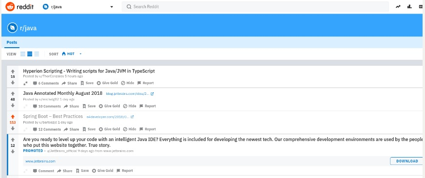
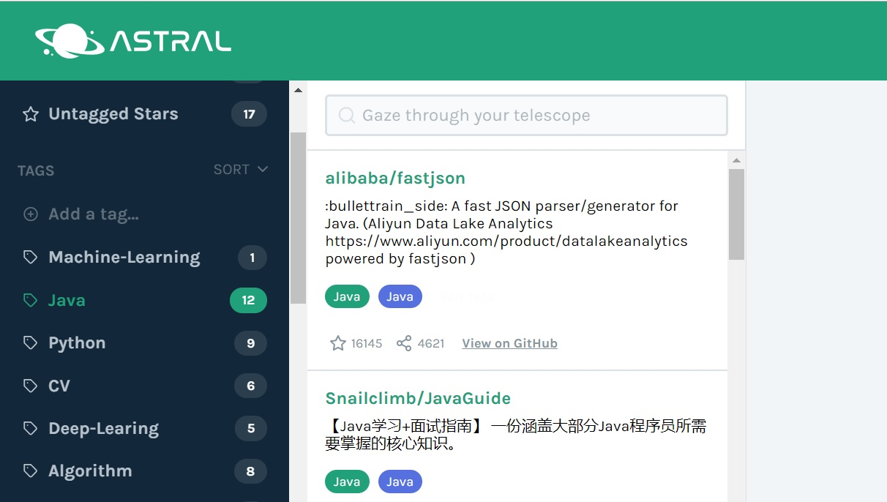

这里整理一些自己平常搜集的比较好的关于Java的学习资源，主要包括博客站点、书籍、课程等。
了解Java最新资讯
这部分主要是了解与Java相关的动态以及信息，能够拓展我们的视野以及寻找一些好的idea。每天早晚都可以刷一刷，可以说是每日必逛。下面列出我采取的几种方式。
1.关注twitter上的Java组织以及大牛
许多大牛或公司会在twitter上发布有关Java的最新动态及相关资源，多逛逛说不定会有意外收获。下面推荐几个比较好的：
几个Java大牛
具体可以参见下面这篇文章:
How to stay up to date with Java and Tech? Use Twitter!
2.关注reddit上的Java讯息
除了twitter，reddit也是一个比较好的平台，可以关注上面的Java，learnjava, javahelp板块。

具体的可以参考下面这篇文章:
3.Hacker News
不仅是Java, 这里也可以浏览关于编程的最新资讯，界面比较简单直接.
4.Medium
上面也可以Follow一些大牛，上面的文章质量还比较高，可以适当看看。
5. Quora和知乎
优秀博客站点
这里主要分享一些比较好的关于Java的博客，包括相关公司组织的以及个人博客。
公司组织
1.阿里中间件博客
想进阿里的可要关注了，内容涉及的可能比较难，可以拓宽视野以及知道业界在做什么。
2.IBM developerWorks中国
上面提供了十分丰富和优质的Java学习资源，包括专题以及系列博客，可以重点关注。
3.美团点评技术博客
不知Java了，包括了前端、算法、数据库优化等，内容比较优质，大部分都是美团在技术中的应用相关的一些原理和实践，很有启发。
4.Google开发者中心
5.Oracle官方Java教程
http://www.oracle.com/technetwork/cn/java/index.html
https://docs.oracle.com/javase/tutorial/tutorialLearningPaths.html
6.黑客派
7.并发编程网
8.Iteye Java
9.InfoQ
10.DZone
应该不止有Java
11.Stack Overflow
上面的回答真的非常非常专业
个人博客
1.E4Developer
主要是Java和Spring相关，作者写的文章非常好，还会分享一些观点和Java资料。
2.baeldung
Spring非常丰富和高质量教程
3.Cafe au Lait
Java网络编程作者，内容丰富。
4.Java成神之路
5.journaldev
资源丰富，包括Java基础、Servle、Spring、设计模式等。
6.孤傲苍狼
JavaWeb总结，很好的关于JavaWeb的资源
7.阿里大牛
8.ScriptShi
网站界面很好，组织的很好。
Java书籍
分享一些暂时知道的比较值得读的Java书籍
JavaSE相关
1.《Java编程思想》
2.《Java核心技术卷一》
3.《Effective Java》
4.《深入理解Java虚拟机》
5.《Java8实战》
6.《Java高并发编程实战》
Java Web相关
1.《深入分析Java Web技术内幕》
2.《spring实战》
3.《Head First Servlets & JSP》
Github资源
除了理论之外，实践很关键，这时需要到Github上找一些教程和源码来读一读。首选推荐一款比较好的能对Github上的star进行分类的工具: Astral
当star多了后，用这个真的非常方便管理。

比较好的教程资源
1.Awesome Java
2.Java-Interview
Java面试题整理
3.JDK源码阅读笔记
4.Java设计模式实现
5.Java学习笔记
包括JavaSE和JavaWeb
练手项目
1.shopping-management-system
Java购物网站，从使用最开始的JSP/Servlet进行开发，到后面不断加入Spring、MyBatis等框架，一步步循序渐进。
2.客户管理系统
简单的使用MVC的客户管理系统
3.SSM商品查询
在上面2的基础上进一步整合SSM进行开发
4.Java高并发秒杀系统
5.java-nio-server
源码阅读
1.JDK源码
2.Spring Framework
3.MyBatis
4.sparkjava
一个非常nice的Java Web框架，非常简单就能搭建自己的Web应用。
课程相关
1.普林斯顿Alorithms,4th
使用Java来实现常用算法和数据结构，代码组织的非常好，除了能学到算法知识外，还能从中学到很多Java编程方式。
2.伯克利cs61b
也是使用Java来实现数据结构和算法，其中有些参考读物也来自上述算法,4th。上面提供了丰富的lab和project，教你一些工程上的实用的东西(IDEA, maven, git等)，虽然比较难，但是学下来编程能力会得到很大提高。
3.慕课网相关课程
4.黑马程序员Java就业班及项目
5.Udemy
上面的课程资源也丰富，价格相对来说比较便宜，Java和Web开发的课程也不少。
下面是关于如何在Udemy上获取优惠的tips:
https://buzzorange.com/techorange/2017/09/07/how-to-purchase-udemy-within-300-dollers/
总结
资源很多，自己还是要脚踏实地去看一本书，读一些源码，多思考，多总结。